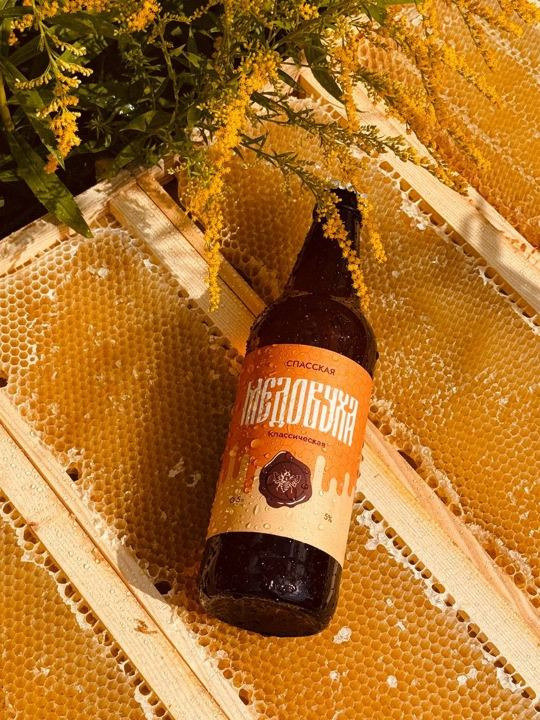
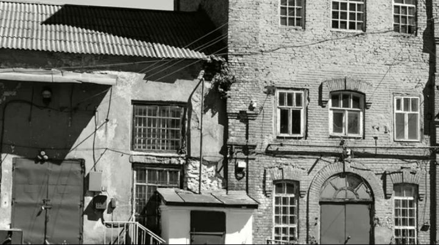
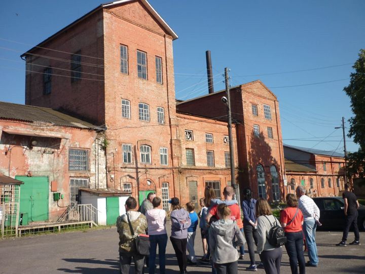
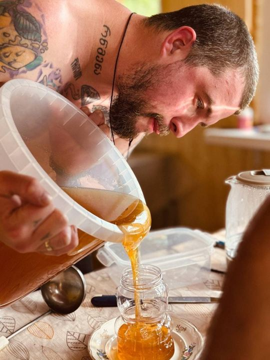
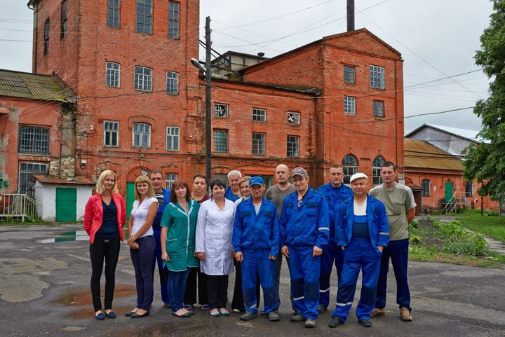
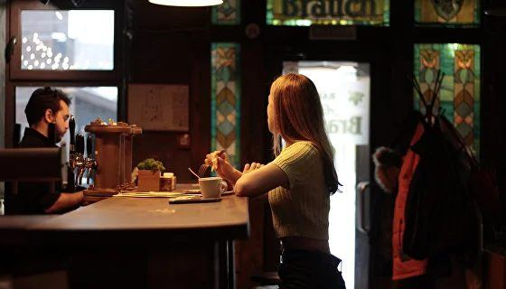
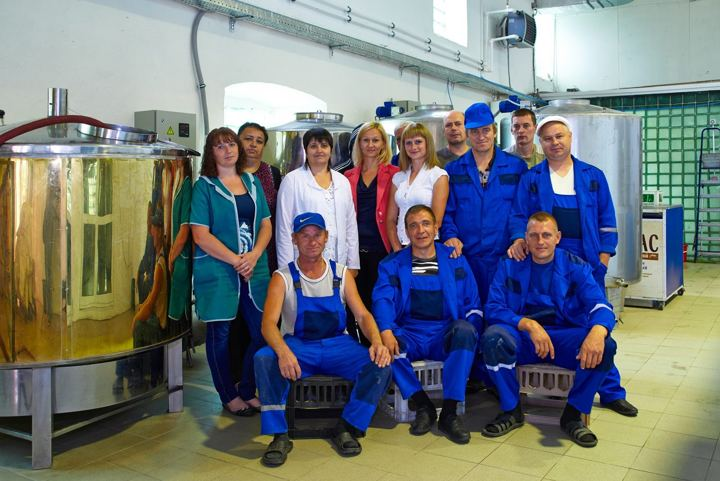
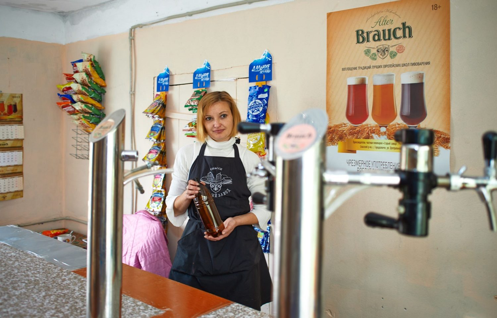
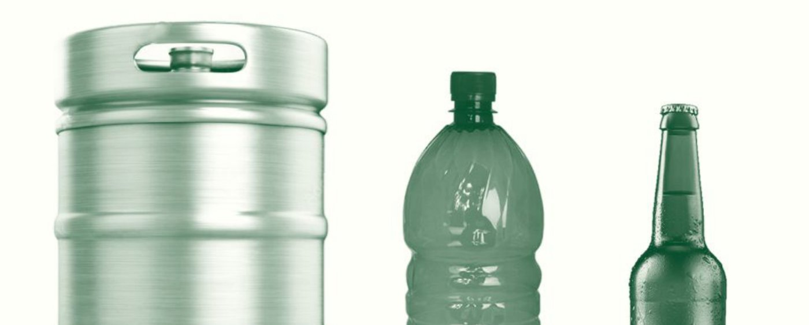

Вам уже есть 18 лет?
Сайт производителя пива, сидра и медовухи содержит информацию об алкогольной продукции.
Сайт производителя пива, сидра и медовухи содержит информацию об алкогольной продукции.
Варим лагер, пшеничное, пэйл‑эли и стаут в цехе старинного спиртзавода, делаем сухой сидр из местных яблок и медовуху на мёде своей пасеки. Вода из скважины 85 метров, 100 % солод, ничего лишнего. Разливаем в кеги, ПЭТ и стекло.
Семь постоянных позиций: пять сортов пива, сухой сидр и классическая медовуха. Все в кегах 20 и 30 л и в стекле 0,5 л, большинство также в ПЭТ.
Сидр из яблок с рязанской земли, медовуха на мёде своих пчёл, бар в центре Рязани и цех, где всё это рождается.










Предприятие стоит в заповедной Мещере, в 105 км от Рязани, в одном из цехов старинного спиртзавода. Оборудование из нержавеющей стали, классическая технология, контроль всех процессов.
Соки местного производства, мёд и пряности
Классическая, контролируем все процессы
Используем 100 % солод
Немецкий, американский и русский
Скважина 85 метров и глубокая очистка
Производство в заповедной зоне
Небольшое гибкое производство: работаем и с одной точкой, и с сетью. Крупным клиентам отсрочка платежа. Самовывоз с завода или доставка, стоимость считаем по тоннажу и адресу.



Всё, что варим, на кранах в центре Рязани. Кухня, терраса, дегустации новых варок. Для партнёров это шоурум: приходите с командой и пробуйте до заказа.
Забронировать столРязань, ул. Почтовая, 54. Все краны и бутылки.
Во всех магазинах сети в Рязани, ежедневно 10:00–24:00. Адреса на 2ГИС, группа сети.
с. Городковичи, Спасский район, ул. Центральная, 162. 105 км от Рязани. Для бизнеса по прайсу, объём и время согласуйте заранее.
Ответим в течение рабочего дня. Или позвоните в отдел продаж.
motorzhin.v.v@gmail.com
prussakov10@gmail.com
Офис: Рязань, ул. Коломенская, 1Б
Производство: Рязанская обл., Спасский р‑н, с. Городковичи, ул. Центральная, 162